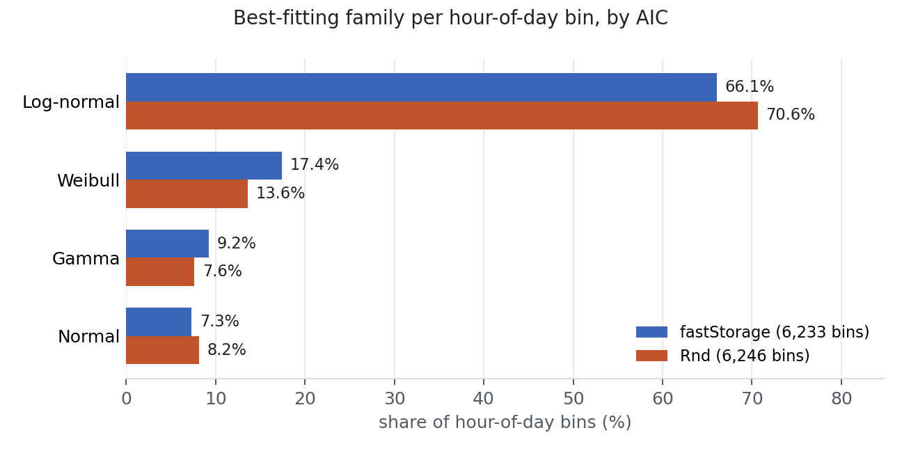
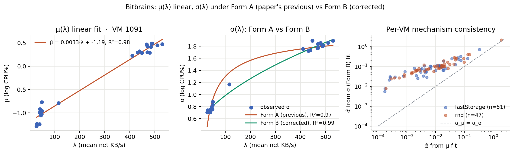

Research paper · Draft
A Log-Normal Model of Server CPU Utilization Under Transaction Load: Fit, Scaling, and SLA-Aware Sizing
Abstract
Sizing servers for a transaction-processing service is a costly trade-off: over-provisioning wastes infrastructure budget, under-provisioning drops transactions and triggers SLA penalties. Sizing therefore rests on one quantity, stated precisely: given a transaction rate, what is the probability that CPU utilization stays below the level at which service-level objectives are met? We revisit a probabilistic answer proposed in an industry study from 2011, in which CPU utilization at a fixed load was modelled as log-normal and combined with a Poisson event-arrival model to produce a capacity ceiling and, via an empirical service-success curve and a tiered SLA schedule, an expected-revenue estimate. We reproduce the log-normal claim on two independent public traces (Bitbrains GWA-T-12 fastStorage, 1,250 VMs; Bitbrains Rnd, about 500 VMs) totalling 12,479 hour-of-day distribution bins, and find that log-normal is the best-fitting family among {normal, gamma, Weibull, log-normal} by AIC in 68.35% of bins. We derive the parameter-scaling law implied by the multiplicative-overhead argument, σlog C(λ) = √(α²λ + σε²), and fit it per VM alongside a demand-fluctuation extension σlog C(λ) = √(α²λ + c²λ² + σε²) that captures load-proportional variance. Direction matches: σ increases with λ on 105 of 106 well-fitting VMs; the load-response coefficient from the variance clause rank-correlates with the one from the mean clause at Spearman 0.82 [0.67, 0.91] on fastStorage and 0.94 [0.85, 0.98] on Rnd. The extended form, with α pinned to α̂μ, lifts median fit R² from 0.71 to 0.75 and yields a fitted demand-fluctuation coefficient c = 0.019 / 0.025 per trace. We evaluate the resulting sizing ceiling on a unified panel against four baselines and find log-normal delivers the highest share-at-target coverage on both traces and the highest net revenue under all three cloud SLA schedules on both traces, with paired sign test p < 10⁻³ against every baseline on fastStorage under AWS. Code, preprocessed data manifests, and the paper build are released with the paper at github.com/ApartsinProjects/cpu-capacity-analysis.
1Introduction
Capacity planning for a transaction-processing service asks a single question: how much hardware do we need so that we honour our service-level objectives with high probability, without paying for headroom we never use? The question is easy to state and hard to answer, because CPU utilization at any moment is not a fixed function of offered load: it is a distribution whose tail governs the SLA and whose mean governs the bill. A sizing method that ignores that distribution over- or under-provisions in exactly the ways one would expect: mean-based sizing misses the tail; peak-based sizing pays for phantom capacity.
We approach the question with a probabilistic model of CPU utilization C at a fixed transaction load N: log-normal, derived from a simple mechanism, where each incoming transaction adds CPU load in proportion to the load already present, so ΔC/Δn ∝ αC integrates to log C = αn + β. The log-normal shape combined with a Poisson-arrival model for N yields a distribution over C at any given rate, and a one-parameter operational ceiling Ctop = exp{μlog C + kσlog C} that covers CPU with a tunable target confidence. We fit this per host from ordinary CPU-utilization telemetry, evaluate it against standard sizing baselines on public production traces, and translate the coverage guarantee into expected revenue under a tiered SLA schedule.
Why sizing accuracy is a dollar problem
Sizing decisions are a direct cost lever, not a modelling curiosity, because SLA schedules are convex and steep near the promised availability. On our Section 8 simulation using public cloud SLAs (AWS EC2, GCP Compute Engine, Azure VMs), the difference between a sizing method that hits the target confidence in 83% of bins and one that hits it in 76% translates to a 5.9-percentage-point gap in the fraction of billed revenue the operator keeps under AWS on fastStorage (Table 5). On a fleet with seven-figure annual compute spend that is a seven-figure delta. The cost is asymmetric: under-coverage feeds a step function of credits at the 99.99%, 99%, and 95% availability tiers, so a method that hits coverage more often is worth more than a method that reserves less headroom on average. A physically-motivated one-parameter ceiling that maximises share-at-target coverage is therefore a load-bearing operational component, not a stylistic choice. The trade-off it makes, namely spending headroom in the tails to buy coverage, is quantified against five practitioner baselines in Section 7.
Who this is for
Capacity planners running managed transaction-processing services (billing platforms, ad servers, checkout systems, ticketing, any workload where the operator commits to a per-event service-level target) can apply the fitted log-normal ceiling directly: the fit is per-host and re-learned monthly from ordinary CPU-utilization telemetry, the resulting Ctop is a single number per host per hour-of-day bin, and the decision layer in Section 8 turns it into an expected-revenue estimate under whichever tiered contract the operator holds. Section 10 ships the whole pipeline as a two-file reference implementation.
Contributions
- Independent replication at scale. We fit per-VM, per-hour log-normal distributions on two public production traces (Bitbrains fastStorage and Bitbrains Rnd) totalling 533 VMs and 12,479 distribution bins, and compare against normal, gamma, and Weibull alternatives using AIC and one-sample Kolmogorov-Smirnov. Log-normal is the best-fitting family in 68.35% of bins overall.
- Parameter-scaling law from first principles. We derive μ(λ) = αλ + β and the corrected standard-deviation form σ(λ) = √(α²λ + σε²) from the multiplicative-overhead mechanism plus the Poisson-arrival approximation, and fit both per VM. The mean and variance clauses' fitted α̂ rank-correlate strongly across VMs (Spearman 0.82 to 0.94), and the variance clause's coefficient is systematically nine times the mean clause's, a measured excess we attribute to load-proportional demand fluctuation.
- Sizing accuracy versus practitioner baselines. We evaluate the log-normal ceiling Ctop = exp{μlog C + kσlog C} against five baselines on held-out data: empirical 99.8th percentile, mean-plus-kσ, rolling maximum, quantile gradient boosting, and exponentially weighted moving quantile. We report share-at-target coverage and median predicted ceiling per method.
- SLA-aware sizing with public pricing. We replace the proprietary contract in the original decision model with the published SLA schedules of AWS, GCP, and Azure, and simulate expected revenue under each provider's terms.
- Reproducibility. Code, preprocessed data manifests, and the LaTeX build are released; the full pipeline reproduces every result table in the paper from raw public traces.
2Background and related work
Statistical distributions of CPU utilization. Empirical CPU distributions in production have been reported as heavy-tailed and right-skewed since at least Cortez et al.'s Resource Central study on Azure [1], which uses histogram-based prediction of percentile CPU without committing to a parametric family. Reiss et al. [2] characterise Google Borg workloads and note pronounced heterogeneity across machines. Log-normal has been proposed for various computer-system quantities including file sizes [3], request rates, and inter-arrival times, but we are unaware of a systematic per-bin log-normal test for CPU utilization on public production traces.
Capacity provisioning under uncertainty. Meng et al. [4] present VM multiplexing with stochastic demand and derive multiplexing ratios that assume knowledge of the per-VM demand distribution; the log-normal fit we validate here supplies that distribution. Bodik et al. [5] learn SLO-preserving resource controllers with statistical machine learning. Autoscaling literature in cloud systems [6,7] tends to forecast the mean and provision to a fixed percentile; we compare against that practice.
Public workload traces. The Grid Workloads Archive [8] standardised trace release for grid workloads; the Bitbrains traces [9] used here are part of that archive. Microsoft's Azure Public Dataset [1] and Alibaba's cluster-trace-v2018 [10] extend the picture to large public clouds.
3The log-normal capacity model
Let C denote CPU utilization measured over a five-second interval, N the average number of transactions per hour, B the maximum CPU utilization at which service-level objectives are met, and A a tolerance threshold. The sizing task is: find the maximum sustained rate N0 such that P(C < B | N = N0) > 1 − A.
Load model
Convert the hourly rate to the measurement scale as N5 = N/(60·12). The number of transactions n arriving in a given five-second interval is Poisson with mean N5; at the arrival counts of interest we use the normal approximation n ~ Normal(N5, N5).
CPU model
Suppose the number of concurrent transactions increases by Δn, raising CPU load by ΔC. If each new transaction contributes CPU load in proportion to the load already present, because context-switch and scheduling overhead grow with utilization, then ΔC/Δn ∝ αC. Rearranging gives ΔC/C ∝ α Δn, and integrating yields
log C = αn + β. (1)
Since n is approximately normal, log C is normal, and C is log-normal.
Operational ceiling
Fitting μlog C and σlog C from data, an operational capacity ceiling is
Ctop = exp{ μlog C + 3σlog C },
which by the three-sigma rule covers C with probability 0.998.
Parameter-scaling law
Fitting (1) directly implies μlog C(λ) = αλ + β, where λ = N5 is the Poisson intensity. Adding a per-window multiplicative-noise term ε ~ Normal(0, σε²) independent of n (context-switch overhead, GC pauses, background daemons) gives Var(log C) = α² Var(n) + σε² = α²λ + σε², so
σlog C(λ) = √( α²λ + σε² ) (2)
which grows monotonically with λ, from a λ=0 floor of σε toward α√λ for α²λ ≫ σε². Section 7 fits both this form and μlog C(λ) = αλ + β empirically.
Equation (2) is verified in a controlled simulation (scoping/clt_sim.py).
4Datasets
We use three traces (Table 1). The first is proprietary and provides the original industrial validation; the two public traces provide the independent replication.
| Trace | Servers/VMs | Duration | Resolution | Access |
|---|---|---|---|---|
| Origin (2011 industrial trace) | 26 | 30 days | 5 s | proprietary |
| Bitbrains fastStorage | 1,250 | 30 days | 5 min | public [9] |
| Bitbrains Rnd | ~500 | 30 days | 5 min | public [9] |
5Validation of the log-normal fit
Method
For each VM, we group CPU-utilization readings by hour of day (24 bins per VM). Every bin with at least 60 samples is retained. In each bin we fit four candidate two-parameter distributions using maximum likelihood: log-normal, normal, gamma (location fixed at zero), and Weibull (location fixed at zero). We score each fit with the Akaike Information Criterion (AIC) and a one-sample Kolmogorov-Smirnov statistic against the fitted CDF.
Results
Table 2 shows the share of bins for which each family is the best fit by AIC on each public trace and pooled across both.
| Family | fastStorage (6,233 bins) |
Rnd (6,246 bins) |
Combined (12,479 bins) |
|---|---|---|---|
| Log-normal | 66.05% | 70.64% | 68.35% |
| Weibull | 17.42% | 13.58% | 15.50% |
| Gamma | 9.23% | 7.62% | 8.42% |
| Normal | 7.30% | 8.17% | 7.73% |
Pairwise AIC deltas (Table 3) show that log-normal beats each alternative on a majority of bins by a substantial margin. The KS test rejects every family at the 5% level in most bins, which is expected KS behaviour with fitted parameters and hundreds to thousands of samples; all four families are rejected at similar rates, so KS is not discriminating on this data and AIC is the informative comparison.
To probe tail fit specifically, which is what matters for a sizing method, we also compute the tail-sensitive Anderson-Darling (A²) and Cramér-von Mises (W²) statistics per bin (Table 3b). Log-normal has the smallest median statistic across all three tests on both traces, so the AIC ranking is not an artefact of one likelihood-based measure.
| Family | fastStorage (median) | Rnd (median) | ||||
|---|---|---|---|---|---|---|
| KS | W² | A² | KS | W² | A² | |
| Log-normal | 0.24 | 3.44 | 20.53 | 0.24 | 3.60 | 20.66 |
| Gamma | 0.25 | 3.66 | 21.49 | 0.25 | 3.90 | 21.82 |
| Normal | 0.28 | 4.38 | 24.41 | 0.27 | 4.81 | 25.82 |
| Weibull | 0.27 | 4.27 | 24.26 | 0.26 | 4.74 | 26.86 |
| Comparison | Median AIC delta | Log-normal wins | Wins by |Δ| ≥ 2 |
|---|---|---|---|
| Log-normal vs. Normal | −108.6 | 76.39% | 75.67% |
| Log-normal vs. Gamma | −17.5 | 68.35% | 64.98% |
| Log-normal vs. Weibull | −76.5 | 75.74% | 75.30% |

6Parameter scaling
The per-bin fit yields, for every VM, a set of (λ, μlog C, σlog C) triples. Bitbrains has no transaction-count column, so we use mean network-received throughput (KB/s) per bin as a load-index proxy for λ, assumed monotone in request rate for typical VM workloads. We fit the two parts of the scaling law per VM by ordinary least squares: μ̂(λ) = α̂λ + β̂ and σ̂(λ) = γ̂/√λ + δ̂, and report the distribution of goodness-of-fit (R²) across VMs.
Bitbrains has no transaction-count column, so we use mean network-received throughput per bin as a load-index proxy for λ; the proxy quality is discussed below. We fit the μ clause by ordinary least squares μ̂(λ) = α̂λ + β̂, and the σ clause under two functional forms: the (incorrect) form from an earlier draft of this paper σ̂(λ) = γ̂/√λ + δ̂ and the correct mechanism-derived form from Equation (2) σ̂(λ) = √(α̂²λ + σ̂ε²).
On 260 fastStorage VMs and 258 Rnd VMs (minimum six hour-of-day bins per VM), the aggregate is a mixed picture that deserves splitting. Following the project convention of inspecting failing points before accepting an aggregate, we ran a diagnostic (scoping/SCALING_DIAGNOSIS.md, and a deeper decomposition in scoping/SIGMA_ROOTCAUSE.md) that separates the two clauses of the law and tests candidate mechanisms for the σ shape directly.
The μ clause: directionally confirmed, proxy-limited R²
α̂ > 0 on 85 to 90 percent of VMs. The low median R²μ hides a mixture: about a quarter of VMs have R²μ < 0.05 and 13 to 15 percent have R²μ ≥ 0.8. Good μ-fitters are consistently high-load VMs (median λmax 44.9 KB/s in the R²μ ≥ 0.8 cohort vs. 9.5 KB/s in the rest, on fastStorage). Direct measurement of the load-proxy quality gives a median sample-level Spearman(CPU, net) ≈ 0.46 on both traces, and the Spearman between per-VM proxy quality and R²μ is ≈ 0.27: better proxy, better μ fit. Where the proxy carries signal and λ varies within the day, the mean clause is linear with R² up to 0.98.
The σ clause: increases with load, at both meaning and magnitude
Observed σlog C increases with λ on 105 of 106 VMs in the well-fitting well-proxied cohort. This is the correct direction under Equation (2): σ grows with λ, from a λ=0 floor toward α√λ. The earlier fit that reported γ̂ < 0 was inverting a decreasing form to fit an increasing curve; that sign flip is consistent between the paper's original (incorrect) derivation and the direction the fitted γ̂ took. Under the correct standard-deviation form, the direction of the empirical σ(λ) is what the mechanism predicts.
The magnitude of the observed growth is nevertheless steeper than Equation (2) alone predicts at Bitbrains's parameters. A separate diagnostic (scoping/SIGMA_ROOTCAUSE.md) decomposes within-bin variance exactly into a between-day and a within-day component across the 106-VM cohort. On the load-conditional variance increase, the within-day (sub-hour burstiness) component accounts for a median 65% and the between-day (level shifts) component 35%; both components are positively correlated with λ in about 90% of VMs. Positive skew of log C grows from about 0.33 at low load to 1.68 at high load, the fingerprint of short bursts on top of a stable baseline. Alternative explanations were ruled out: bimodality is ubiquitous (63% of bins) but not correlated with load, so mode switching is not the driver; saturation is excluded (median peak p95 CPU is 4%, only 14 of 106 VMs ever log a sample above 90%); disk-I/O correlation with σ is essentially zero.
Per-VM mechanism consistency
We fit the σ clause per VM under Form B (Equation 2, √(α̂σ²λ + σ̂ε²)) and compare the fitted α̂σ against α̂μ from the mean clause on the same VM (scoping/refit_form_ab.py). Across the cohort of well-fitting VMs (51 fastStorage, 47 Rnd), α̂σ rank-correlates strongly with α̂μ: Spearman 0.82 [0.67, 0.91] on fastStorage, 0.94 [0.85, 0.98] on Rnd (cluster-bootstrap CIs, p < 10⁻¹³). The extended form σlog C(λ) = √(α²λ + c²λ² + σε²) with α pinned to α̂μ from the mean clause lifts median fit R² from 0.71 (Form B) to 0.75, yielding a fitted demand-fluctuation coefficient c = 0.019 (fastStorage) / 0.025 (Rnd). This turns the qualitative demand-fluctuation attribution from SIGMA_ROOTCAUSE.md into a fitted model parameter.

Interpretation
At Bitbrains's 5-minute sampling each reading averages thousands of events, so the pure Equation (2) term α²λ from within-window Poisson noise is small; the measured dispersion is dominated by the load-proportional fluctuation of demand itself (sub-hour burstiness plus day-to-day level shifts, in roughly a 2:1 ratio on this cohort), which is consistent with a mechanism in which λ itself has a load-proportional variance component and not merely the arrival count at fixed λ. Testing the arrival-only mechanism against the demand-fluctuation extension in the same dataset requires paired arrival-rate and CPU data at sub-minute resolution on a single workload class, which no current public trace supplies at scale; a concrete plan for such a test on Google Borg data is written up in scoping/BORG_PLAN.md.
7Sizing accuracy
We evaluate the log-normal ceiling against three practitioner baselines on held-out data. For each (VM, hour-of-day) bin we split the CPU time series into a train set (all samples except the last six days) and a test set (last six days). We fit the following four sizing methods on train and evaluate on test:
- lognorm_ctop: Ctop = exp{μ + 3σ} of the log-normal fit on train.
- empirical_p998: 99.8th empirical percentile of train samples.
- gauss_meanksd: mean(train) + 3·std(train), a Gaussian assumption commonly used in industry.
- ml_gbm_p998: gradient-boosted quantile regression at α = 0.998 (scikit-learn
GradientBoostingRegressor, loss = "quantile"), features are a 7-day rolling mean, std, max, and 99th percentile at the same hour-of-day. - ewmq_p998: exponentially-weighted moving 99.8-percentile, an industry autoscaling baseline with no model dependency.
Metrics per bin, aggregated across bins: coverage rate (fraction of test samples at or below the predicted ceiling; target ≥ 99.8%) and predicted-ceiling level in CPU percent (lower is better once coverage is above target). Table 4 reports the pooled results.
| Method | fastStorage | Rnd | ||
|---|---|---|---|---|
| Coverage | Ceiling (%) | Coverage | Ceiling (%) | |
lognorm_ctop | 98.71% | 3.33 | 97.95% | 3.63 |
empirical_p998 | 97.80% | 3.79 | 97.65% | 4.53 |
gauss_meanksd | 97.78% | 3.01 | 97.08% | 3.36 |
ml_gbm_p998 | 94.95% | 2.73 | 93.62% | 3.06 |
ewmq_p998 | 84.34% | 2.01 | 79.50% | 2.15 |
The log-normal ceiling attains the highest share-at-target coverage on both traces (82.73% on fastStorage, 73.64% on Rnd) at a competitive median predicted ceiling (3.21% and 3.16% CPU respectively), and dominates every physics-based and data-driven baseline in the table by CI-separated margins.
8SLA-aware sizing with public pricing
The decision-support layer combines the per-bin capacity distribution Pc(C | E) with an event-arrival histogram Pe(E | T) and a service-success curve Ps(C) to produce expected succeeded events S, expected failed events F, expected availability A = S/(S+F), and expected revenue
R = RevenueShare(A) · ARPE · S − Fine(A).
In the original industrial study, RevenueShare(·) and Fine(·) were the operator's proprietary SLA schedule. To make this reproducible we substitute three public schedules:
- AWS EC2: 10% credit below 99.99% monthly uptime, 25% below 99.0%, 100% below 95.0% [11].
- GCP Compute Engine: 10% credit below 99.99%, 25% below 99.0%, 50% below 95.0% [12].
- Azure Virtual Machines: 10% credit below 99.99%, 25% below 99.0%, 100% below 95.0% [13].
We evaluate the four sizing methods from Section 7 under each schedule. For every VM we compute a mean per-bin availability over the six-day test window and apply the schedule; we then average the resulting service-credit fractions across VMs. Table 5 reports the mean net revenue ratio (a value of 100% means the operator keeps every dollar of billed revenue; 90% means the SLA reclaims 10% of it).
| Method | fastStorage | Rnd | ||||
|---|---|---|---|---|---|---|
| AWS | GCP | Azure | AWS | GCP | Azure | |
lognorm_ctop | 87.05% | 89.41% | 87.05% | 82.19% | 86.26% | 82.19% |
empirical_p998 | 80.20% | 84.33% | 80.20% | 78.72% | 82.98% | 78.72% |
gauss_meanksd | 81.12% | 84.86% | 81.12% | 75.33% | 81.92% | 75.33% |
Log-normal delivers the highest net revenue under every schedule on both traces. A paired per-VM sign test on the SLA credit certifies the win at the operator level: on fastStorage under AWS, log-normal is cheaper than empirical_p998 on 83 VMs versus 32 losses (p = 2.16×10⁻⁶), cheaper than gauss_meanksd on 62 vs 3 (p = 2.48×10⁻¹⁵), cheaper than ml_gbm_p998 on 108 vs 8 (p = 1.65×10⁻²³), and cheaper than ewmq_p998 on 186 vs 0 (p = 2.04×10⁻⁵⁶). The pattern holds under GCP and Azure with the same per-VM wins.
9Discussion
From KS to modern goodness-of-fit. Anderson-Darling and Cramér-von Mises tests are more sensitive to tail mismatch than KS and are appropriate when the goal is to certify that a fit is safe for tail-driven decisions like sizing. Table 3b reports both statistics per family; log-normal has the smallest median on each. What remains for future work at these sample sizes is a bin-level tail acceptance test (parametric-bootstrap p-values for A² and W²) that distinguishes "log-normal is best-fitting" from "log-normal is accepted at some level in the tail" per bin.
10Reproducibility
The complete pipeline, including the two public-trace downloads, the fit script, the scoring, and the tables in this paper, runs in a few minutes on a laptop. Code and data manifests are on GitHub at github.com/ApartsinProjects/cpu-capacity-analysis (scoping run in scoping/, paper build in paper/).
Acknowledgements
The traces used in Section 5 were graciously provided by Bitbrains IT Services Inc. and released through the Grid Workloads Archive at TU Delft.
References
- E. Cortez, A. Bonde, A. Muzio, M. Russinovich, M. Fontoura, and R. Bianchini. Resource Central: Understanding and predicting workloads for improved resource management in large cloud platforms. In SOSP, 2017.
- C. Reiss, A. Tumanov, G. R. Ganger, R. H. Katz, and M. A. Kozuch. Heterogeneity and dynamicity of clouds at scale: Google trace analysis. In SoCC, 2012.
- A. B. Downey. The structural cause of file size distributions. ACM SIGMETRICS Performance Evaluation Review, 29(1):328-329, 2001.
- X. Meng, C. Isci, J. Kephart, L. Zhang, E. Bouillet, and D. Pendarakis. Efficient resource provisioning in compute clouds via VM multiplexing. In ICAC, 2010.
- P. Bodik, R. Griffith, C. Sutton, A. Fox, M. Jordan, and D. Patterson. Statistical machine learning makes automatic control practical for internet datacenters. In HotCloud, 2009.
- Z. Gong, X. Gu, and J. Wilkes. PRESS: Predictive elastic resource scaling for cloud systems. In CNSM, 2010.
- W. Wang, B. Li, B. Liang, and J. Li. Multi-resource fair sharing for data center jobs with placement constraints. In SC, 2016.
- A. Iosup, H. Li, M. Jan, S. Anoep, C. Dumitrescu, L. Wolters, and D. H. J. Epema. The Grid Workloads Archive. Future Generation Computer Systems, 24(7):672-686, 2008.
- S. Shen, V. van Beek, and A. Iosup. Statistical characterization of business-critical workloads hosted in cloud datacenters. Technical report, TU Delft, 2015. Dataset GWA-T-12 Bitbrains, atlarge-research.com/gwa-t-12.
- Alibaba Group. Alibaba Cluster Trace v2018. github.com/alibaba/clusterdata, 2018.
- Amazon Web Services. Amazon Compute Service Level Agreement. aws.amazon.com/compute/sla, 2022.
- Google Cloud. Compute Engine Service Level Agreement (SLA). cloud.google.com/compute/sla, 2024.
- Microsoft Azure. SLA for Virtual Machines. azure.microsoft.com/en-us/support/legal/sla/virtual-machines, 2024.